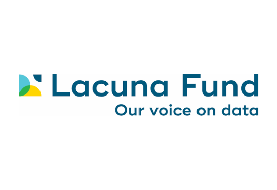
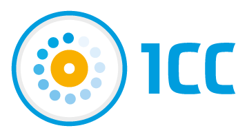

Text resource
QomL’actaqa
A Qom–Spanish parallel corpus designed to support machine translation, linguistic research, teaching, and language documentation.
Access and licensing details will be published here.
A Qom–Spanish corpus and tools for NLP and language technology
We release two complementary resources for the Qom language covering both text and speech, supporting research in natural language processing for low-resource and Indigenous languages.
QomL’actaqa is a Qom–Spanish parallel corpus for machine translation and other text-based tasks, while QomSpeech is a speech corpus of audio–text pairs in Qom for automatic speech recognition (ASR) and related technologies.
Both datasets are accompanied by tools and models to facilitate their use.
The project develops two complementary resources for working with written and spoken Qom.
Text resource
A Qom–Spanish parallel corpus designed to support machine translation, linguistic research, teaching, and language documentation.
Access and licensing details will be published here.
Speech resource
A collection of Qom audio recordings paired with written transcriptions for speech recognition and spoken-language research.
Access and licensing details will be published here.
Our work connects language documentation with natural language processing and speech technology for Qom.
Articles, technical reports, models, and related materials will be listed here as they become available.
We provide an online demo to explore Qom–Spanish translation using our models.
Note: This system is intended for research purposes and may produce errors.
Viviana Cotik, Instituto de Investigación de Ciencias de la Computación (ICC). UBA
Paola Cúneo, CONICET - Universidad de Buenos Aires. Instituto de Lingüística
Christian Cossio, Departamento de Computación. Facultad de Ciencias Exactas y Naturales. UBA
Temis Tacconi, Instituto de Lingüística. Facultad de Filosofía y Letras. UBA
Belu Ticona, Departamento de Computación. Facultad de Ciencias Exactas y Naturales. UBA
Aleksei Korablev, Minerva University
Construcción de corpus y de traductor
Macarena Fernández Urquiza, Facultad de Filosofía y Letras. UBA.
Construcción de corpus y evaluación de traductor
Pablo Laciana, Instituto de Investigación de Ciencias de la Computación (ICC). UBA
Construcción de corpus e implementación de herramientas
Victoria Beiras del Carril, Instituto de Lingüística. Facultad de Filosofía y Letras. UBA
Asesoramiento antropológico
Esta sección reconocerá a miembros de la comunidad qom, hablantes, educadores y organizaciones que contribuyen a la creación, revisión y uso responsable de estos recursos. Los nombres y detalles se incorporarán con el consentimiento de cada colaborador.
This work was partially supported by [Funding Agency / Project Name / Grant No.].
The datasets … were created with support from Lacuna Fund, Google.org, Instituto de Lingüística (...), ICC (CONICET-UBA).

